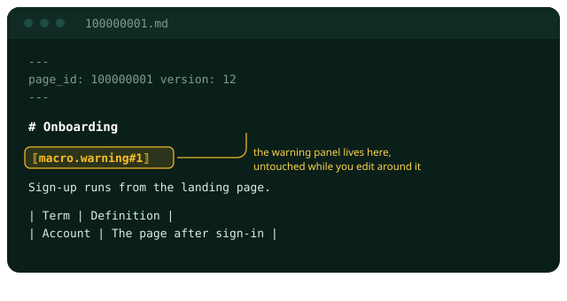
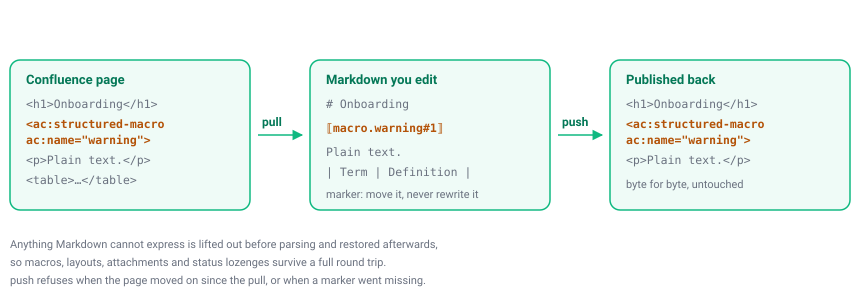

Pull a page, edit it anywhere, push it back. Macros, panels and layouts return byte for byte — because they are never rebuilt.
Atlassian's MCP server stops at Cloud. This one runs against the Confluence your company hosts itself, and hands an agent four operations with the guardrails built in: it cannot silently drop a macro, and it cannot publish over an edit somebody made while it was working.
{
"mcpServers": {
"confluence": {
"command": "amber-confluence-mcp",
"env": { "AMBER_CONFLUENCE_URL": "https://wiki.example.com" }
}
}
}
read a page as Markdown
replace the page body
change one passage, leave the rest alone
see whether a local copy went stale
Refusals reach the agent as plain text it can read and act on, not as errors it has to guess about. Works in Claude Desktop, Claude Code and any other MCP client.
That is life on every self-hosted Confluence today. Atlassian's tooling only talks to Cloud, so nothing on your machine reaches your own wiki.
And the raw page format is a trap. One careless edit takes out the macros, the anchors and the column layouts, and a colleague finds out days later.
$ amber confluence pull 100000001 Onboarding (v12, space DEMO) ~/amber/pages/100000001.md 3 opaque block(s): ⟦macro.toc#1⟧ ⟦macro.warning#1⟧ ⟦macro.status#1⟧ $ amber confluence diff 100000001 ## Owners - Analyst: John Doe + Analyst: John Doe, standing in for the release + ## Rollout + Staged, two regions first. $ amber confluence push 100000001 -m "rollout section" Onboarding v12 -> v13
Every other converter reads your macros, turns them into something else and tries to rebuild them on the way back. That is where panels lose their colour, status lozenges turn into plain words and column layouts collapse.
This one rebuilds nothing. Whatever Markdown cannot carry is lifted out before the conversion and dropped back in afterwards, unchanged. A marker shows you where it sits, so you can move it or delete it on purpose — and cannot corrupt it by accident.


Publishing stops when the page moved on since your pull, and names who changed it and when. It stops again when a marker went missing from your text, and names every block that would have disappeared. Both exit with status 2, so a script can tell a refusal from a crash.
$ amber confluence push 100000001 Refusing to publish: the page changed after you pulled it. your copy: v12 on the server: v14, last edited by John Doe at 2026-09-20T09:14:00Z Pull again and reapply your edit, or repeat with force to overwrite their work.
| Data Center 7.9+ | A personal access token from your profile settings. |
| Anything older | Your usual password. Those versions have no tokens, and plenty of companies still run them. |
| A public wiki | Nothing at all. |
Credentials live in your system keychain, never in a config file. Put a token in the config file and it refuses to start, and tells you where the token belongs.
One package, no dependencies, installs in under a second.